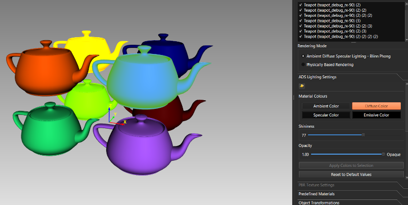

Lesson 9 of 14
Lesson 9: Materials & Textures
Introduction
Materials and textures control how objects appear. ModelViewer supports both traditional ADS materials and modern PBR (Physically Based Rendering) materials.
Material Editor
Access the material editor from the left panel:
Step 1: Select Objects
Select one or more objects to apply materials to.
Step 2: Open Material Tab
Click the 'Material' tab in the left panel.
 Material editor panel showing ADS and PBR properties
Material editor panel showing ADS and PBR properties
Basic Material Properties (ADS)
Traditional Ambient-Diffuse-Specular material model:
Step 1: Diffuse Color
The base color of the object. Click the color box to open the color picker.
Step 2: Ambient Color
Color in shadowed areas. Usually same as diffuse but darker.
Step 3: Specular Color
Color of highlights. Usually white or light gray.
Step 4: Shininess
Controls specular highlight size. Higher = smaller, sharper highlights.

Objects with different ADS material propertiesPBR Material Properties
Modern physically-based materials for realistic rendering:
Step 1: Base Color/Albedo
The surface color without lighting effects.
Step 2: Metallic
0.0 = non-metal (dielectric), 1.0 = pure metal. Controls how light reflects.
Step 3: Roughness
0.0 = perfectly smooth mirror, 1.0 = completely rough/matte.
Step 4: Ambient Occlusion (AO)
Simulates shadows in crevices and corners. Usually from a texture map.
 Spheres showing different metallic and roughness values in a grid
Spheres showing different metallic and roughness values in a grid
Applying Textures
Add image-based detail to surfaces:
Step 1: Open Texture Tab
Click the 'Textures' tab in the left panel.
Step 2: Load Texture Images
Click 'Browse' buttons to select texture files (PNG, JPG, TGA, etc.) for different maps.
Step 3: Texture Types
ADS Workflow:
• Diffuse map - Base color
• Normal map - Surface details
• Specular map - Highlight variation
• Height/Bump map - Surface displacement
PBR Workflow:
• Albedo/Base Color map
• Normal map
• Metallic map
• Roughness map
• AO map
• Height map
• Diffuse map - Base color
• Normal map - Surface details
• Specular map - Highlight variation
• Height/Bump map - Surface displacement
PBR Workflow:
• Albedo/Base Color map
• Normal map
• Metallic map
• Roughness map
• AO map
• Height map
Step 4: Apply Textures
Click 'Apply' to apply loaded textures to selected objects.
 Texture mapping panel showing different texture slots
Texture mapping panel showing different texture slots
Generating UV Coordinates
Some models don't have UV coordinates (required for textures):
Step 1: Select Objects
Select objects that need UV coordinates.
Step 2: Generate UVs
Right-click → 'Generate UVs' to automatically create texture coordinates.
UV generation uses various algorithms. Results vary depending on geometry. You may need to use external 3D software for complex UV unwrapping.
 Object before and after UV generation with texture applied
Object before and after UV generation with texture applied
Material Presets
Quick starting points:
- Plastic: Low metallic (0.0), medium roughness (0.4-0.6)
- Metal: High metallic (0.9-1.0), low roughness (0.1-0.3)
- Wood: Low metallic (0.0), high roughness (0.7-0.9)
- Glass: Low metallic, very low roughness, enable transmission